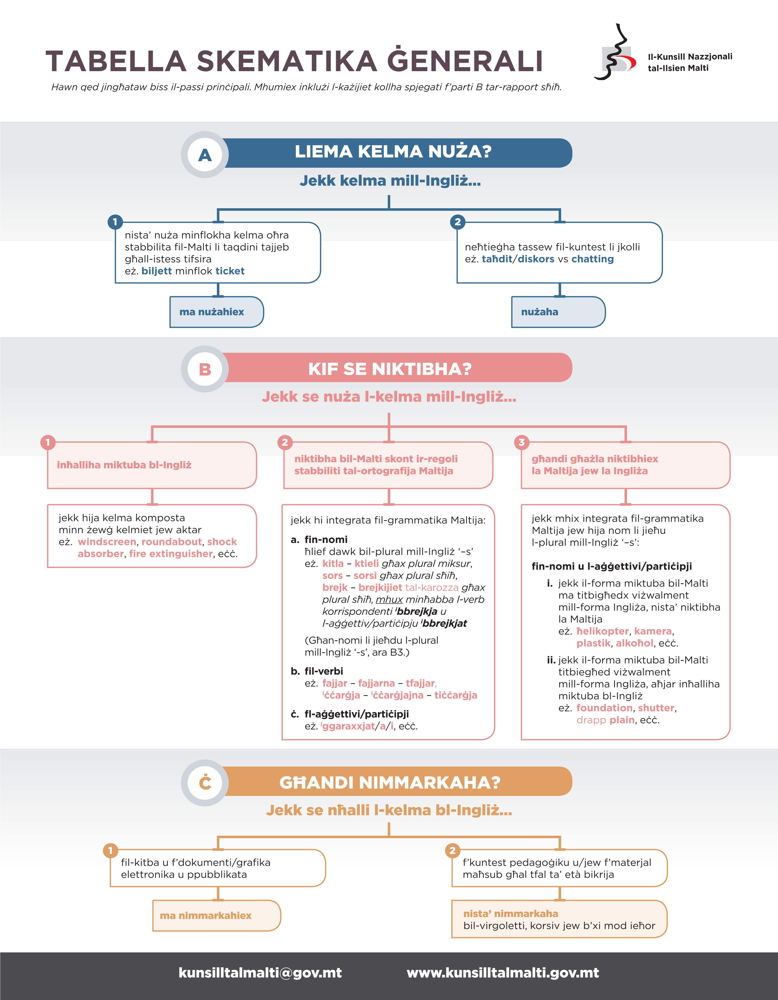
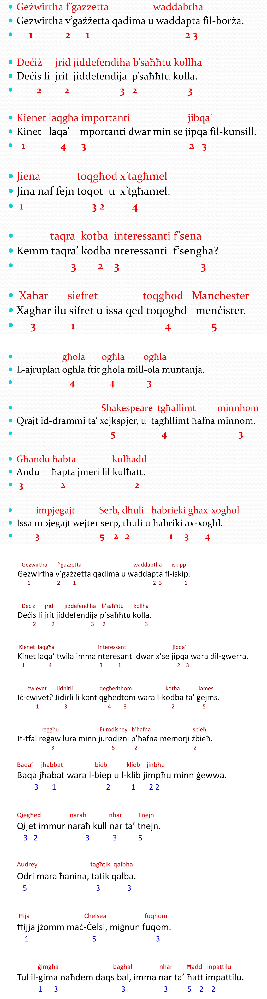

Il-Ħames Prinċipji tal-Ortografija tal-Malti
1. Prinċipju Fonetiku
tikteb kif tisma’
2. Prinċipju Fonoloġiku
tinterpreta l-ħsejjes li tisma’
it-telf tal-leħen - bieb[biep] ħadid[ħadit] kasti[kastik]
l-assimilazzjoni parzjali - L+N = NN btala[ptala]
l-assimilazzjoni parzjali - N+L = LL sbieħ[żbieħ]
biex tissalva l-konsistenza fonoloġika u morfoloġika
3. Prinċipju Storiku / Etimoloġiku
in-nisel tal-kelma / l-istorja tal-kelma
iżomm rabta mal-istorja tal-lingwa tagħna
għ/h; h: hena hieni henjin (bl-h) però jinqraw bil-ħ (hieni u henjin)
Il-kitba tagħhom tħaffef ix-xogħol tal-morfoloġija u mhux ixxekklu.
(forom tan-nomi, forom tal-verbi, eċċ.)
Distinzjoni bejn omofoni - ors/għors
Valur ikoniku - rabta mal-istorja.
Vokali etimoloġika: mara importanti
Il-kontinwità storika ta' ħsejjes tradizzjonali bil-valur ikoniku tagħhom.
4. Prinċipju Morfoloġiku
Niktbu skont il-mudelli.
il-bażi tal-grammatika tal-Malti
L-integrità tal-forom tal-morfoloġija introflessiva Semitika (għerq bil-forom).
5. Prinċipju Viżiv
Niktbu kif imodrrijin naraw il-kelma fil-lingwa li ħadnieha minnha.
Dan il-prinċipju ma jibnix fuq il-prinċipji l-oħra minħabba li
jirrifletti l-iżvilupp tal-Malti meta jissellef kliem minn lingwi oħrajn
(Sqalli, Taljan u Ingliż).
Dan il-kriterju japplika għall-ismijiet ta' persuni, l-ismijet ta' postijiet u
xi kliem ieħor (roundabout, Corinthia).
Nevitaw il-kitba ta' kliem stramb.
Agħti l-prinċipji tal-ortografija, enumerati skont l-ordni ta' kif jiġu applikati:
Il-Prinċipji huma:
1. Fonetiku
2. Fonoloġiku
3. Storiku / Etimoloġiku
4. Morfoloġiku
5. Viżiv
Nru Prinċipju Tip
--- --------- ---
1 Fonetiku ie
2 Fonoloġiku assimilazzjoni
3 Storiku / Etimoloġiku h (xagħar month JINKITEB xahar)
għ ’ (sengħa year TINKITEB sena)
i etimoloġika (mmens TINKITEB immens)
NEQSIN / REPLACED u ŻEJDA (taqra’ TINKITEB taqra)
4 Morfoloġiku konjugazzjoni
binja
il-forma tal-kelma
(laqa’ (n.) FLOK laqgħa (n.))
(noqogħd TINKITEB noqgħod)
5 Viżiv ismijiet
Deċiżjonijiet 2 - Ingliż
ittra kapitali fil-bidu tas-sentenza
punt tal-għeluq
nfetaħ
Fl-2010 infetaħ
1
jqajmu
L-ICE iqajmu
5
nbid
tipi ta’ mbid
2
llegar
tipi ta’ illegar
1
Għaliex il-Malti għandu dawn il-ħames prinċipji?
Għaliex ma ntagħżlitx ortografija fonetika għalkollox?
X'riedu jiksbu jew isalvaw dawk li ma bbażawx ir-regoli fuq il-fonteika biss?
Ir-raġunijiet ewlenin huma l-konsistenza fonoloġika, li nsalvaw l-integrità tal-għerq,
il-kontinwità storika ta' ħsejjes tradizzjonali bil-valur ikoniku tagħhom,
l-integrità tal-forom tal-morfoloġija introlessiva Semitika u
biex nevitaw il-kitba ta' kliem stramb li jtellifna waqt il-qari.
